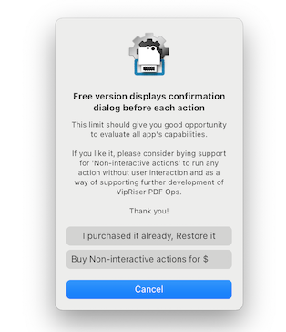

THANK YOU FOR USING THE TRIAL VERSION
VipRiser’s trial version will only allow you to open output in Preview app.
To unlock full functionality, please consider installing VipRiser PDF Ops from the app store and purchasing non-interactive actions.
Unlock Full Functionality
1. install VipRiser PDF Ops from Apple App store
2. Purchase “non-interactive actions”
Once you install VipRiser PDF Ops, you can purchase non-interactive actions from the help menu or within VipRiser preferences.

After you do so, additional functionality becomes available for you to use within VipRiser, as well as new Automator actions you can use to build your own workflow.
Use VipRiser as part of publishing workflow
VipRiser designed to be very configurable. This configurability comes in form of additional actions provided by VipRiser PDF Ops app.
For example:
- configurable destination processing (folder, application, workflow, script)
- transform CMYK color / B&W / PDF-X3
- convert to PDF/A or website
- use VipRiser’s PDF printer as destination in Automator’s workflow